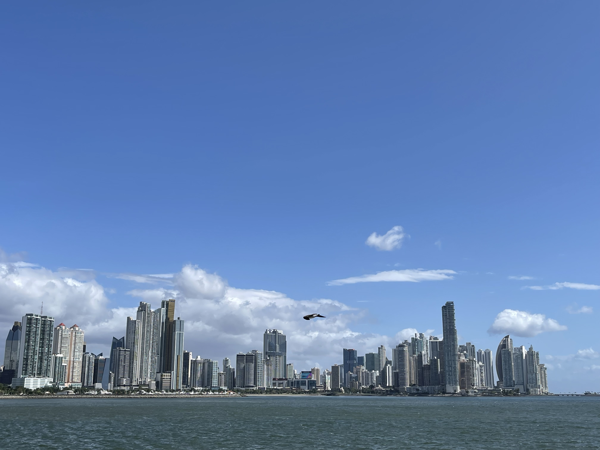
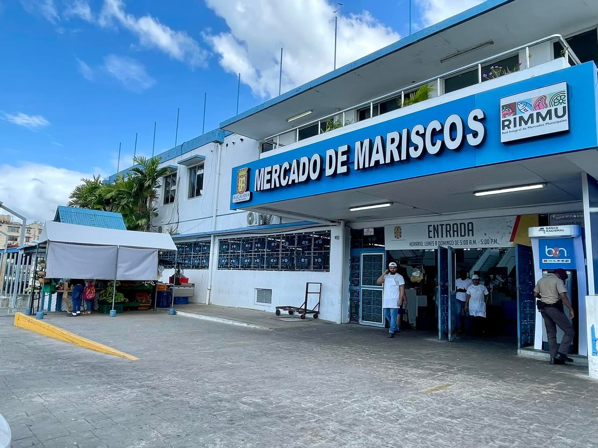
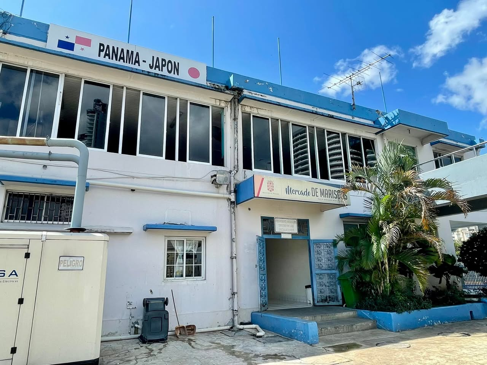
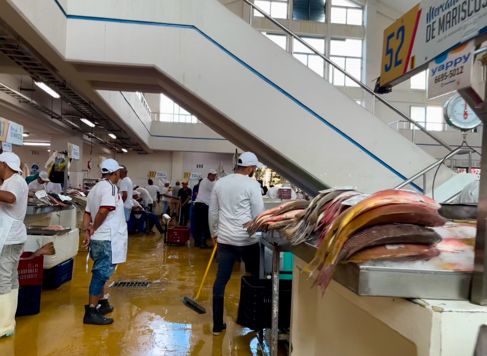
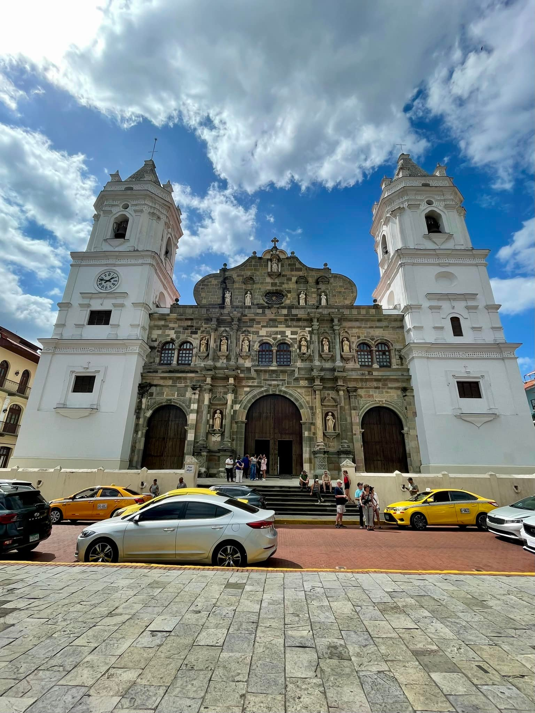
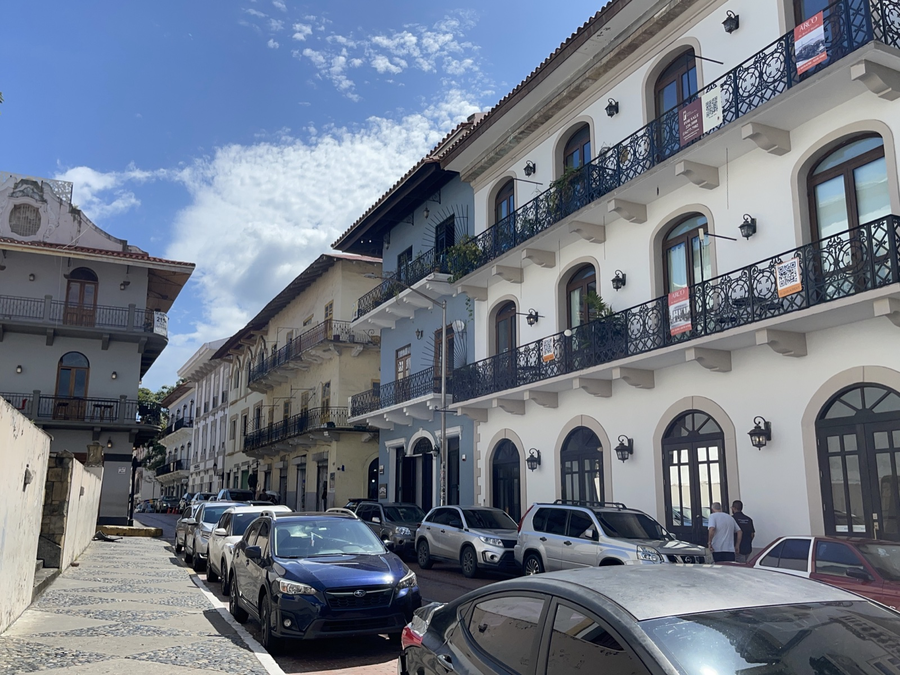
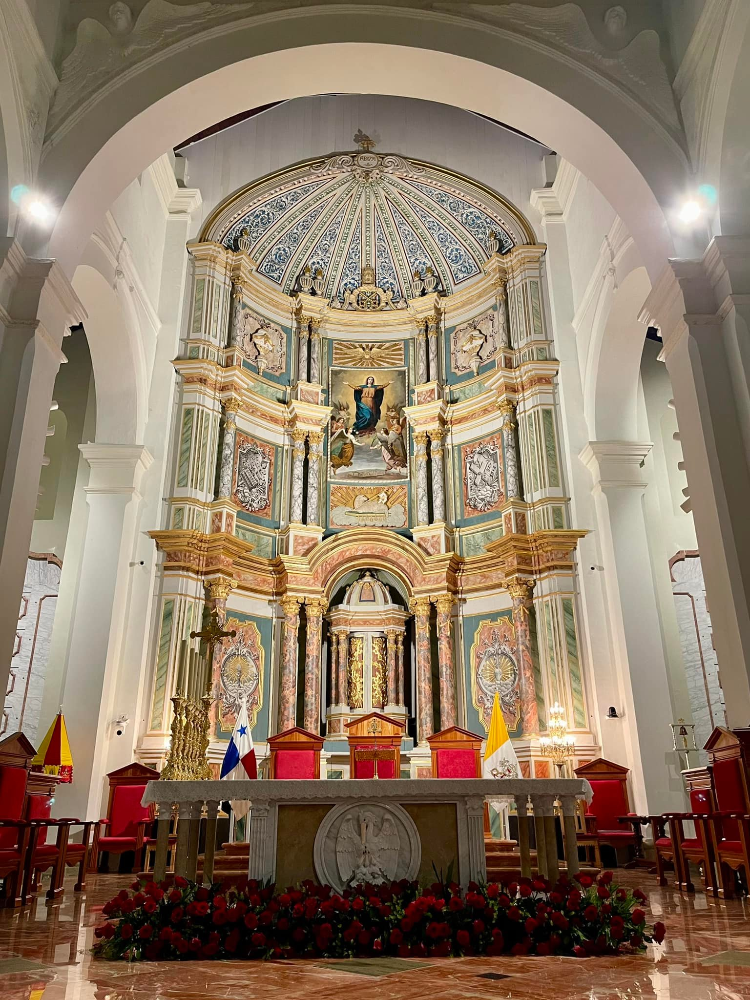
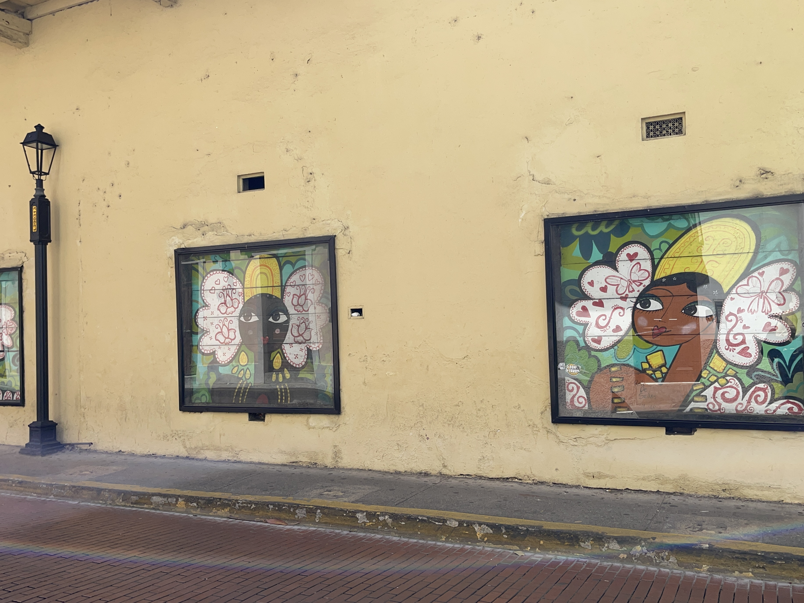
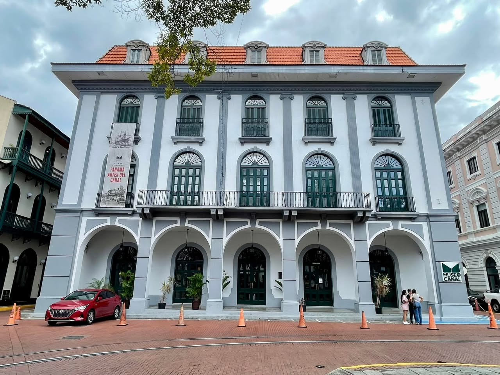

January 2025, Panama City. After seeing the ruins at Panamá Viejo, I headed to the city center. Panama City is the most urbanized city in Central America, with a striking skyline of tall buildings. The view from the seaside walkway is unlike any other Central American capital.

Mercado de Mariscos — A Japanese Flag on the Wall
First stop was the Mercado de Mariscos, the seafood market. Right on Panama City's waterfront, popular with both locals and tourists.

On the side of the building was the text "PANAMA – JAPÓN" with the Japanese flag. The market was apparently built with Japanese aid. Didn't expect to see the Japanese flag at a fish market in Central America.

The first floor is the seafood market itself, vendors in white uniforms laying out and butchering fish. Tuna, flounder, shrimp, octopus — a wide range. The second floor is a restaurant where they'll cook the fish you bought downstairs.

Casco Viejo — The UNESCO Old Town
The next day I went to Casco Viejo. The historic old town of Panama City, registered as a UNESCO World Heritage Site in 1997, with Spanish colonial architecture intact.
Cobblestone alleys and colorful buildings stretch on. Streets where white walls and black iron balconies alternate; buildings half-restored, half-abandoned; old buildings turned into restaurants and galleries — old and new mixed together. The atmosphere is similar to Granada, Nicaragua, but the skyscrapers of Panama City visible behind it make Casco Viejo feel distinctive.



Walking the alleys, a large mural caught my eye on the side of a building. A pop-style portrait, paired against an old, half-restored wall — a clean contrast.

Another striking piece was a giant mural depicting women in pollera — Panama's national dress. Lacy white skirts, vivid flowers, and the traditional "tembleques" hair ornaments rendered as modern graphic art that fit naturally into the historic district.

Kuna mola — folk craft of Casco Viejo
In the squares and along the streets of Casco Viejo, Kuna (Guna) women set up stalls selling molas. Mola is a reverse-appliqué textile craft of Panama's Indigenous Kuna people: layered colored cloths are cut away to reveal the layers below, building up geometric patterns and animal or plant motifs. A single mola is said to take dozens to hundreds of hours of handwork.


The women wore traditional dress with beaded bands wrapped around their arms and legs. The pieces came in many forms — single panels, framed art, bags, pouches — and choosing took a while. In the end, I liked both of the molas she was holding up so much that I took both home as souvenirs.
Museo del Canal — The Canal's History
I also stopped by the Museo del Canal Interoceánico in Casco Viejo. It covers the history of the Panama Canal from construction to today, and is one of the larger institutions inside Casco Viejo.
Exhibits included a flag related to Panama's first coup in 1931, and a careful walk-through of history from the colonial era to the present. The canal isn't just a civil engineering feat — it's tied directly to the formation of Panama itself, and the museum gets that across.

I'd thought of Panama City as "the place to see the canal," but Casco Viejo was worth the time too. Far more urbanized than other Central American capitals, with a feel different from both Costa Rica and Nicaragua.
Travel guide (general info)
※ This section combines public information with the author's notes; please confirm the latest entry, safety, and operating details on the official sites.
Casco Viejo as a World Heritage Site
- Rebuilt in 1673 after the original Panamá Viejo was burned by the pirate Henry Morgan. A dense quarter of Spanish colonial architecture — city walls, churches, convents and a theatre.
- Inscribed by UNESCO in 1997 as the "Archaeological Site of Panamá Viejo and Historic District of Panamá" (both Casco Viejo and Panamá Viejo are component parts of the same property).
- Highlights include the Catedral Metropolitana, Plaza San Francisco, Plaza de Francia, Plaza de la Independencia, the Teatro Nacional and the Museo del Canal. Half a day to a full day on foot.
Mercado de Mariscos and Japanese cooperation
- The Mercado de Mariscos was built and renovated between 1995 and 2003 through Japanese grant aid (JICA). The "PANAMA - JAPON" wall plaque commemorates the project.
- Ground floor: wholesale and retail seafood; upper floor: restaurants. Take-away ceviche cups (USD 2–5) are a local favourite.
- Open early morning to late afternoon (typically around 6:00–17:00). Mondays may close for cleaning — check ahead.
Practical info for Panama City
- The currency is the balboa (PAB), used at parity with the US dollar. In practice most paper money is USD; coins are local balboa coinage mixed with US coins.
- The metro and ride-hailing apps (Uber, inDrive) are convenient. Casco Viejo has no metro station — taxi or walk.
- As of 2025, Japan's MOFA travel advisory issues no warning for Panama overall, but flags certain neighbourhoods of the capital (El Chorrillo, Curundú, etc.) as higher-risk.